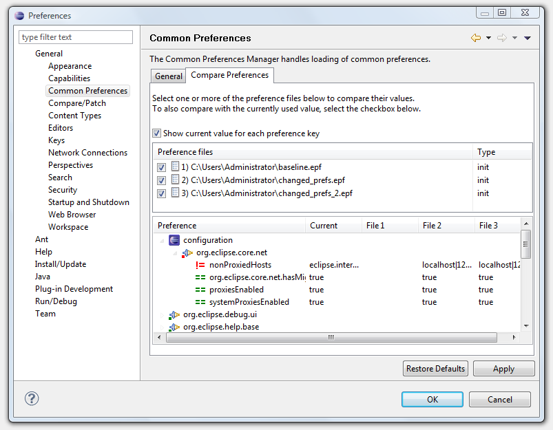

Comparing Preferences
It is possible to compare values in one or more preference files.
To compare preferences:
- Open the Common Preferences Manager dialog, which is
accessible via the Preferences
dialog (click Window > Preferences, expand General
and select Common Preferences. Click the Compare Preferences tab).

- From the file list, select one or more Preference Files for
which you wish to compare the preference values.
- To compare the values currently used in the workspace, select
the Show current value for each preference key check-box.